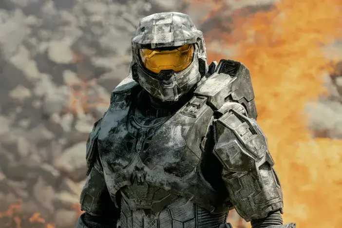
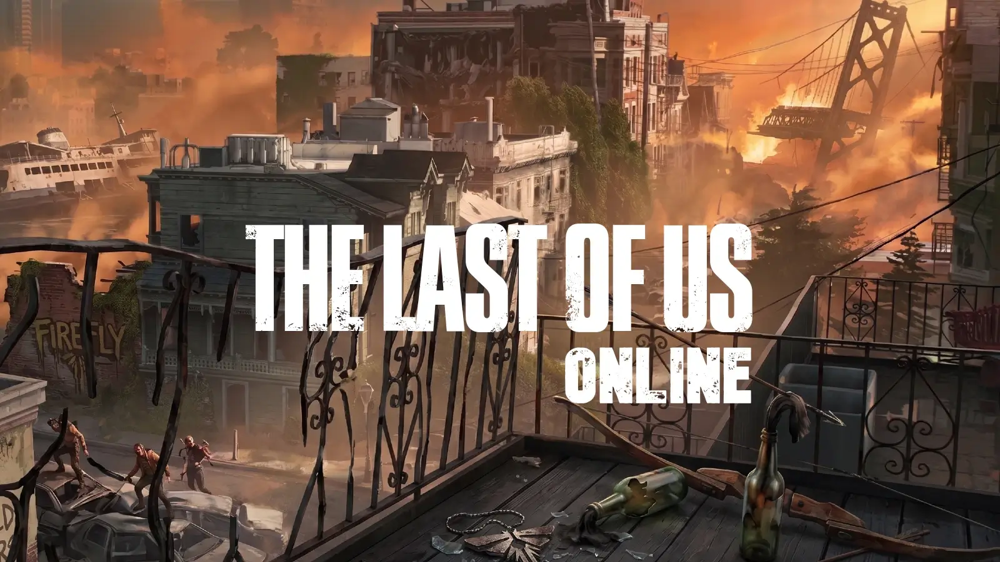
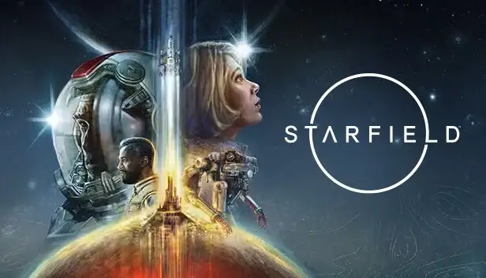
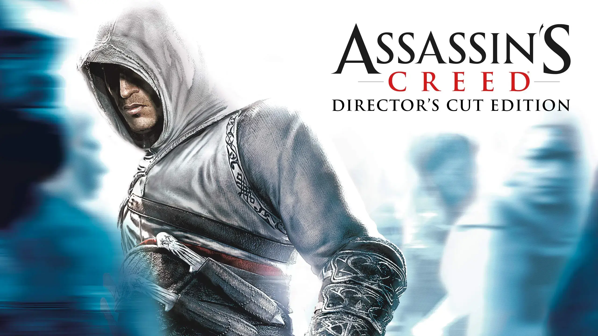
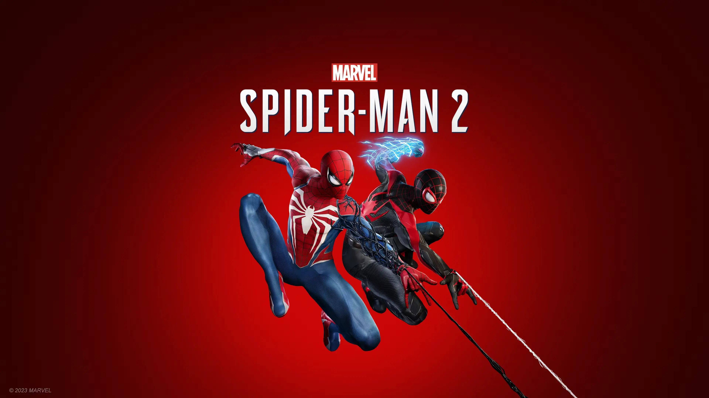

Новини

Halo Studios готують ремейки Halo 2 і 3
За словами інсайдерів, студія Halo Studios не планує зупинятися лише на одному ремейку. Повідомляється, що повноцінні оновлені версії Halo 2 і Halo 3 вже знаходяться у розробці на Unreal Engine 5. Очікується значне покращення графіки, фізики та геймплею, а також підтримка сучасних платформ.
.webp)
Metro 2039 вже має 1 мільйон вішлістів
Нова частина серії Metro ще не отримала офіційної дати релізу, проте вже досягла позначки в 1 мільйон додавань у список бажаного. Розробники з 4A Games подякували гравцям за підтримку та зазначили, що гра стане найбільш амбітною у серії, з відкритішим світом та новими механіками виживання.

The Last of Us Online під загрозою скасування
Після тривалого періоду невизначеності фанати The Last of Us Online запустили петицію з вимогою не скасовувати проєкт. За перші 24 години вона зібрала сотні підписів. За чутками, розробка гри була майже завершена, але студія переглядає свою стратегію щодо мультиплеєрних проєктів.

Starfield отримав велике оновлення
Bethesda випустила масштабний патч для Starfield, який додає нові планети, сюжетні місії та покращення продуктивності. Гравці також отримали нові можливості кастомізації кораблів і персонажів, що значно розширює ігровий досвід.

Нова частина Assassin’s Creed у розробці
Ubisoft офіційно підтвердила розробку нової частини Assassin’s Creed. За попередніми даними, гра повернеться до класичного стилю серії, з акцентом на стелс та історичний сюжет. Деталі обіцяють розкрити вже найближчим часом.

Spider-Man 2 став хітом продажів
Marvel’s Spider-Man 2 продовжує встановлювати рекорди продажів та отримує високі оцінки від гравців і критиків. Розробники відзначають успіх гри та не виключають випуск додаткового контенту у майбутньому.